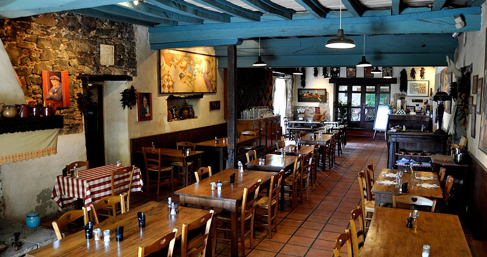

À VENIR...
La mise en place d'une restauration d'une soixantaine de couverts au déjeuner destinés aux bureaux des alentours est pour bientôt. Cette restauration sera produite à partir d'aliments rejetés par la grande distribution (dates de péremption, produits mis à l'écart...) qui pourtant sont toujours bon ! Nous recherchons un(e) cuisinier(e) pour ce projet, si vous êtes intéressés, rendez vous sur cette page. 